Let's live off the land!
As most of us know life sometimes sends us down an unexpected path. The financial uproar in 2008 and resulting personal repercussions sent my wife and I on one such journey. After the dust settled in early 2012, we decided to check out from the ratrace and try living a "simpler" life. One asset we were able to maintain possession of was some recreational property in Southern Missouri. Forty three wooded acres with a small springfed creek seemed like the perfect getaway spot
From campsite to homestead.
We owned the property for about 10 years when we decided to make it our permanent residence. Fortunately, in that time I was able to construct a tiny (12' x 16') cabin where we stayed during our weekend trips down. Unfortunately, it was not in a state for full time occupancy.
The first priority was to create some extra living space. Thankfully my profession was carpentry for a 10 year period. I was able to build a small kitchen addition along with an equally small bedroom/bathroom area. The entire living quarters was comprised of approximately 400 square feet. A tiny house before tiny houses were cool and plenty of space for 2 people.
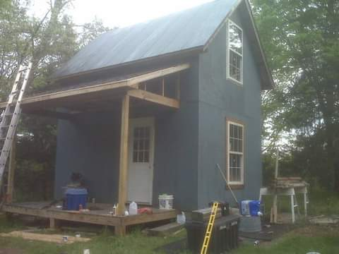Off grid by necessity.
One of the more difficult aspects of daily life in the beginning of our experiment was the lack of utilities. No running water, no electrical service and the "facilities" were comprised of a simple composting toilet and a camp shower. We were somewhat prepared, though. Ninety watts of solar panels, two deep cycle marine batteries, and a 1200 watt true sine wave inverter went a long way to make things a bit more convenient. It was plenty of juice to power some led lights, a laptop and charge a cell phone. Luckily for us we also met a very friendly neighbor from up the road a piece (local jargon). She was litterally a life saver by allowing us to fill up on as as much water as we needed. It required quite a few trips every day to get enough water for us...and the horse. Did I mention the horse? More on that later. The toilet was a five gallon bucket with a box built around it and a civilized authentic toilet seat to top it off. Just use it as required and dump a generous amount of sawdust on top.
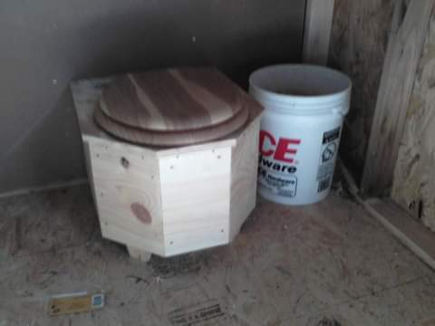 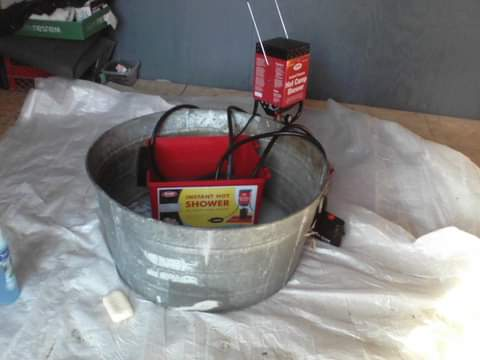Now we're cooking.
Six months without the modern utility convenience can certainly make one appreciate the things they may have taken for granted. We finally saved enough (with a little assistance from mom) to upgrade the homestead. First came the well and a small generator. I had hauled plenty of water for an entire lifetime in my opinion. A couple weeks later we got electric hooked up. Thankfully another very friendly neighbor helped us put in the wiring from the power pole to the house. A backhoe was way better than digging a 175 foot ditch by hand in the rocky (verry rocky) Ozarks soil. Things were definitely looking up.
Three cats, two dogs, and a horse: what else do we need?... A mini mule of course!
If you're going to live in the country you must have animals. It's a rural rule...I'm pretty sure. We went down with two dogs, one cat and a horse. Over time though we realized that just wasn't enough. Why not get a couple more cats? There were plenty of unwanted critters trying to make their way in. And Sophie (the horse) is probably lonely. What could we do about that? A mini-mule is the obvious answer to that question. Next on the list was some chickens and maybe some goats, but that would have to wait.
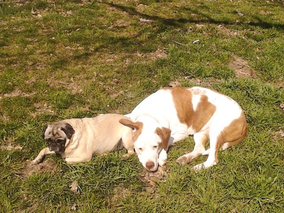 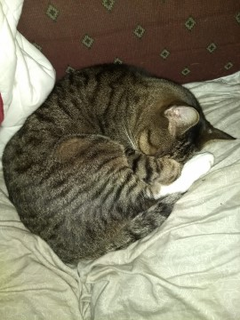 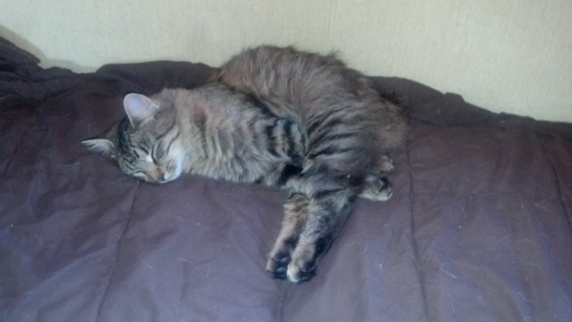 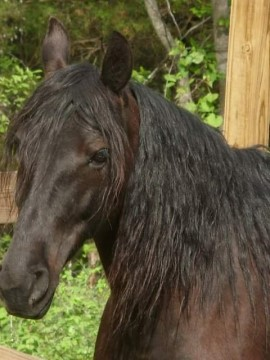 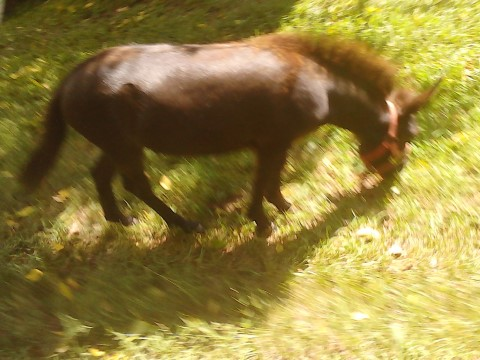Lots of water and plenty of scenic views.
One perk of living in the Ozarks was the abundance of outdoor activities and natural beauty. The mountains offered spectacular views and access to fantastic waterways. We spent many days hiking or kayaking. My wife also found many areas both on and off our property to take her horse for a ride. Sometimes it felt like being on vacation all year.
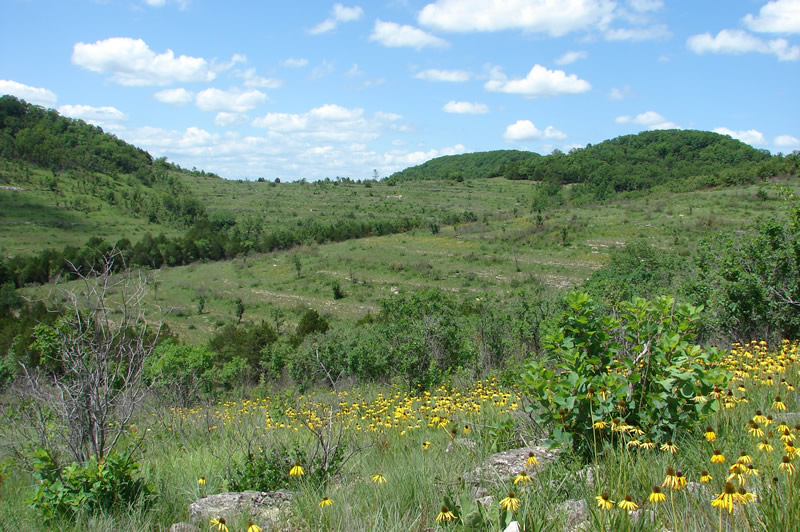 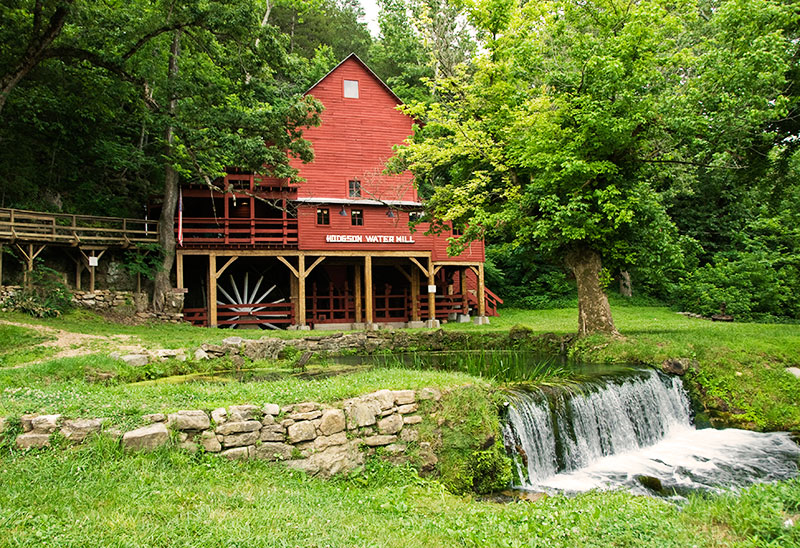 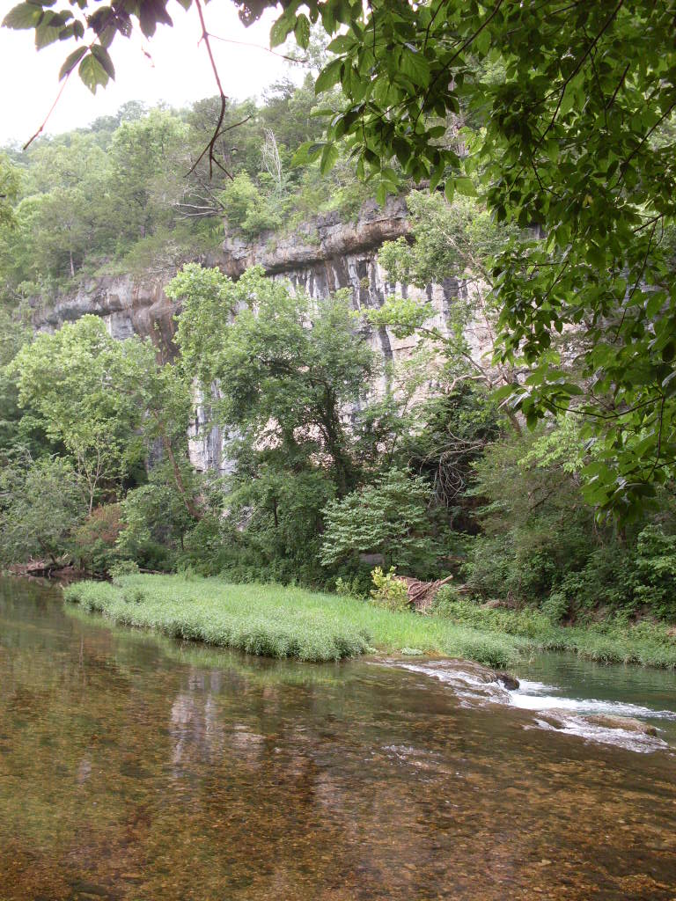Dashed dreams: back to the big city.
Just as life circumstances took me to the homestead, it threw me another curve ball. One that hit me right in the forehead, figuratively speaking. After rehoming the animals and getting a few things in order, I made the move back to St. Louis to be closer to family. Living in a cabin in the middle of the woods with my best friend was an experience that I wouldn't trade for anything. It just ended way too soon. Time to start over...again.
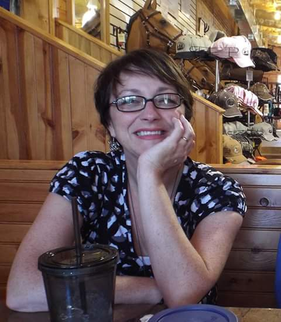